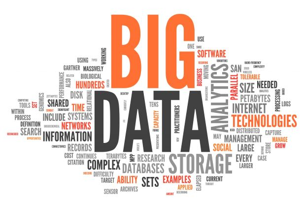
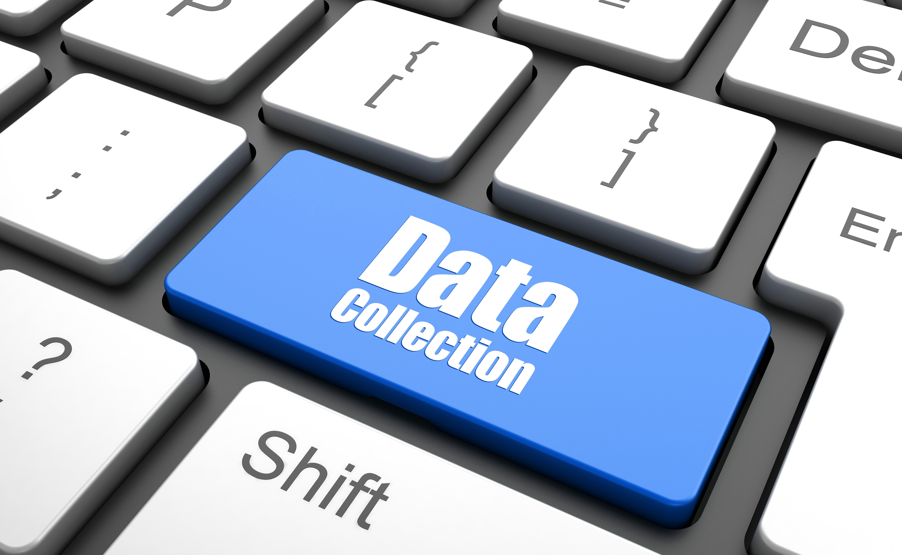
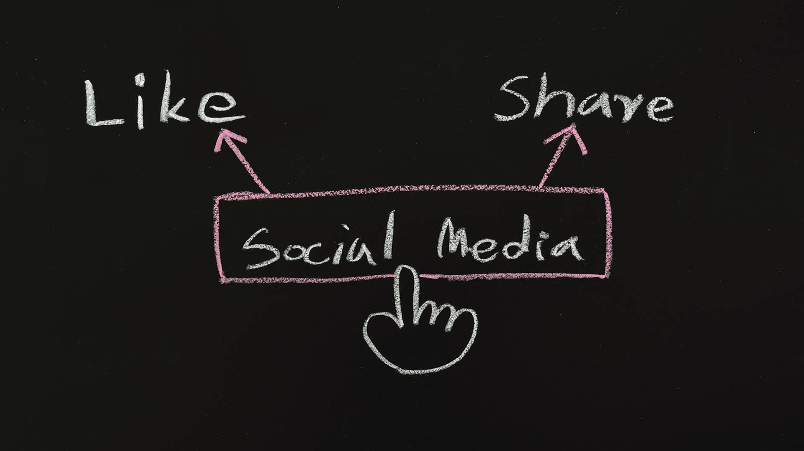

BIG DATA
Lavoro svolto dal gruppo Mazzu
⠀
CHE COSA SONO
Sono una raccolta di dati così estesa che richiede tecnologie e metodi analitici specifici per l’estrazione di valore o conoscenza. Vengono utilizzati dai sistemi privati e dalle aziende con l’intento di mercato e profilazione delle abitudini e delle caratteristiche degli utenti e cittadini. Quando è nato l'Internet delle cose (IoT) c’è stato un grande collegamento tra dati, persone, processi e informazioni. Il collegamento avviene tramite sensori chiamati NFC o RFID che portano alla produzione di tantissime informazioni e dati che possono essere processati, trattati e fornire informazioni utili.

⠀
PROFILO DIGITALE
Il profilo digitale è il risultato dei processi di profilazione che portano a una scheda dell’utente. il nostro profilo digitale contiene ad esempio informazioni personali (sesso, età nome e cognome ecc), comportamenti, interazioni sul web.
La profilazione è il processo di raccolta dati e analisi delle informazioni sulla persona. La profilazione è nata dalle grandi aziende per capire gli interessi degli utenti e usarli a proprio favore, la cosa però si evoluta nel tempo diventando sempre più presente e più invadente, ora infatti tramite la profilazione digitale si possono capire molte più cose sulla persona.
⠀
MODALITÀ DI RACCOGLIMENTO DATI

Le principali modalità di raccoglimenti dei dati sul web sono:
COOKIES → file di testo generati dalle pagine web che raccolgono dati dell’utente
DIGITAL FINGERPRINT → l’impronta digitale del dispositivo che serve per l’identificazione del dispositivo nel web
LOCATION TRACKING → tracciamento della posizione attraverso il GPS
Per informazioni più dettagliate clicca QUI
⠀
COME PROTEGGERSI
VPN (Virtual Private Network)
Danno la possibilità di stabilire una connessione privata quando si utilizzano le reti pubbliche. Le VPN cifrano il vostro traffico Internet e nascondono la vostra identità online, rendendo più difficile per terze parti tracciare le vostre attività su Internet e rubare i vostri dati. La procedura crittografica si svolge in tempo reale.

MANTENERE UN PROFILO BASSO
Tramite le nostre ricerche su google o i nostri post sui social si lasciano un sacco di informazioni: dove si abita, cosa si mangia, i gusti musicali, la scuola/lavoro che si frequenta, ecc… la cosa più sensata da fare è tenere un profilo basso e dare meno informazioni personali possibili.
USA SOLO I COOKIE TECNICI
Accetta solo i cookie tecnici che sono strumenti grazie ai quali si consente all’utente di effettuare una specifica operazione sul web. In buona sostanza, essi non sono altro che elementi informatici di natura puramente tecnica che servono al sito web che si sta visitando per metterci nella condizione di poter svolgere ben precise attività.
⠀
CONSIDERAZIONI FINALI
La nostra opinione di gruppo è che ci sono sia dei pro che dei contro sulla questione Big Data: i pro sono indubbiamente un’esperienza di navigazione mirata e personalizzata che agevola quello che stiamo facendo. Il contro principale però è la violazione della privacy in quanto i siti che raccolgono dati su di noi spesso e volentieri li vendono ad altre aziende per profitto. Bisognerebbe quindi cercare di tutelarsi accettando per esempio solo i cookie obbligatori.